library(tidyverse)32 Homework: Calibration for Complex Summaries
$$ \newcommand{X}{} \newcommand{Y}{}
$$
Summary
This one is about interval estimation for estimation targets that are complex summaries of a population. We’ll focus on the summaries we discussed in our lecture on Multivariate Analysis and Covariate Shift. The lesson here is that calibration works exactly the same way it did when we were just estimating simpler summaries like means. Because of that, parts of this assignment will be very similar to things you did in the Week 2 and 3 Homeworks.1
I think working through some of those same problems in this more general context can help make these steps feel a bit more meaningful. For example, in Chapter 36 below, we’ll be checking that our interval estimates are properly calibrated when we use them on fake data. When you do this for a really simple summary, the process is almost too transparent. It doesn’t feel like you’re really making up a fake population, checking that it looks right, and seeing what happens when you’re sampling from it. You can see through the whole process from start to finish. In this more complex setting, you have to go step by step a bit more.
Please don’t hesitate to reach out if you’re having trouble with any part of this. Learning new programming styles and new mathematical ideas at the same time can be a lot. And Google and ChatGPT may not be as helpful as you’d like. There’s a lot of content on the web about this programming style and these mathematical ideas, but there’s not much that talks about both at the same time.
We’ll use the tidyverse package.
Setup
We’re going to work with the same California income data we used in our last homework.
ca = read.csv('https://qtm285-1.github.io/assets/data/ca-income.csv')
sam = data.frame(
w = ca$sex == 'female',
x = ca$education,
y = ca$income)Here’s a review of the estimators we’ll be working with. We’ll estimate the following four summaries of the income discrepancy between male and female residents of California. \[ \begin{aligned} \hat \Delta_{\text{raw}} &= \frac{1}{N_1}\sum_{i: W_i=1} Y_i - \frac{1}{N_0}\sum_{i: W_i=0} Y_i \\ \hat \Delta_0 &=\frac{1}{N_0}\sum_{i: W_i=0} \qty{\hat\mu(1,X_i) - \hat \mu(0, X_i)} \\ \hat \Delta_1 &= \frac{1}{N_1}\sum_{i: W_i=1} \qty{\hat\mu(1,X_i) - \hat \mu(0, X_i)} \\ \hat \Delta_{\text{all}} &= \frac{1}{n} \sum_{i=1}^n \qty{\hat\mu(1,X_i) - \hat \mu(0, X_i)} \end{aligned} \]
Here’s some code to calculate point estimates for these. This is from the previous homework on point estimation.
summaries = sam |>
group_by(w,x) |>
summarize(muhat = mean(y), sigmahat = sd(y), Nwx = n(), .groups='drop')
summary.lookup = function(column.name, summaries, default=NA) {
function(w,x) {
out = left_join(data.frame(w=w,x=x),
summaries[, c('w','x',column.name)],
by=c('w','x')) |>
pull(column.name)
out[is.na(out)] = default
out
}
}
muhat = summary.lookup('muhat', summaries)
sigmahat = summary.lookup('sigmahat', summaries)
Nwx = summary.lookup('Nwx', summaries)
W = sam$w
X = sam$x
Y = sam$y
x = unique(X)
n = length(Y)
Nw = function(w) { sum(Nwx(w, x)) }
Px.1 = function(x) { Nwx(1,x)/Nw(1) }
Px.0 = function(x) { Nwx(0,x)/Nw(0) }
Px = function(x) { (Nwx(0,x)+Nwx(1,x)) / n }
alphahat.raw = function(w,x) { ifelse(w==1, Px.1(x), -Px.0(x)) }
alphahat.1 = function(w,x) { ifelse(w==1, Px.1(x), -Px.1(x)) }
alphahat.0 = function(w,x) { ifelse(w==1, Px.0(x), -Px.0(x)) }
alphahat.all = function(w,x) { ifelse(w==1, Px(x), -Px(x)) }
general.form.estimate = function(alphahat, muhat, w, x) {
grid = expand_grid(w=w, x=x)
ww = grid$w
xx = grid$x
sum(alphahat(ww,xx)*muhat(ww,xx))
}
Deltahat.raw = mean(Y[W==1]) - mean(Y[W==0])
Deltahat.1 = mean(muhat(1,X[W==1]) - muhat(0,X[W==1]))
Deltahat.0 = mean(muhat(1,X[W==0]) - muhat(0,X[W==0]))
Deltahat.all = mean(muhat(1,X) - muhat(0,X))Calibrating Interval Estimates
Now that we’ve got all this machinery in place, we’re ready to calibrate some interval estimates around them. We’ll start by bootstrapping the point estimates we just calculated. As in the previous exercise, I’ll do it for \(\hat\Delta_\text{raw}\) and \(\hat\Delta_1\) and you’ll do it for \(\hat\Delta_0\) and \(\hat\Delta_\text{all}\). You can re-use a lot of my code, so all you’ll need to do is add a few lines.
bootstrap.estimates = 1:10000 |> map(function(.) {
I.star = sample(1:n, n, replace=TRUE)
Wstar = W[I.star]
Xstar = X[I.star]
Ystar = Y[I.star]
summaries.star = sam[I.star,] |>
group_by(w,x) |>
summarize(muhat = mean(y), .groups='drop')
muhat.star = summary.lookup('muhat', summaries.star, default=mean(Ystar))
data.frame(
Deltahat.raw = mean(Ystar[Wstar==1]) - mean(Ystar[Wstar==0]),
Deltahat.1 = mean(muhat.star(1,Xstar[Wstar==1]) -
muhat.star(0,Xstar[Wstar==1]))
)
}) |> bind_rows()- 1
- Do what follows 10,000 times.
- 2
- Sample with replacement from the sample to get a bootstrap sample.
- 3
-
Summarize the bootstrap sample to get a bootstrap-sample version of the function \(\hat\mu(w,x)\). See Note 35.1 below for what passing
defaultis doing in the call tosummary.lookup. - 4
- Calculate the estimation target using the bootstrap-sample stuff. All you’ll need to do is add a few lines here.
- 5
-
This is how we get a data frame with 10,000 rows and two columns, ‘Deltahat.raw’ and ‘Deltahat.1’. What map gives us is a list of 10,000 data frames with one row each (and the right two columns).
bind_rowswill combine them into one data frame.
Here are histograms showing, for \(\hat\Delta_\text{raw}\) and \(\hat\Delta_1\), its bootstrap sampling distribution. I’ve used the function width to calculate the width of the middle 95% of each distribution and draw that, as well as the distribution’s mean, in as vertical lines. And I’ve added my point estimate as a blue dot, too.
scales = list(scale_y = scale_y_continuous(breaks=seq(0, .0002, by=.00002)),
scale_x = scale_x_continuous(breaks=seq(-40000, 10000, by=10000)),
coord_cartesian(xlim=c(-40000, 10000), ylim=c(0, .0002)))
bootstrap.plot.raw = ggplot() +
geom_histogram(aes(x=Deltahat.raw, y=after_stat(density)),
bins=50, alpha=.2, data=bootstrap.estimates) +
geom_point(aes(x=Deltahat.raw, y=.00005), color='blue') +
width_annotations(bootstrap.estimates$Deltahat.raw)
bootstrap.plot.1 = ggplot() +
geom_histogram(aes(x=Deltahat.1, y=after_stat(density)),
bins=50, alpha=.2, data=bootstrap.estimates) +
geom_point(aes(x=Deltahat.1, y=.00005), color='blue') +
width_annotations(bootstrap.estimates$Deltahat.1)
bootstrap.plot.raw + scales
bootstrap.plot.1 + scales

And here are 95% intervals around my point estimates, calibrated using the bootstrap.
bootstrap.interval.raw = Deltahat.raw +
c(-1,1)*width(bootstrap.estimates$Deltahat.raw)/2
bootstrap.interval.1 = Deltahat.1 +
c(-1,1)*width(bootstrap.estimates$Deltahat.1)/2bootstrap.interval.raw[1] -17265.902 -6382.859bootstrap.interval.1[1] -20400.126 -9785.606Here’s a review exercise on connecting what we see in the plot to the intervals we’ve reported.
Solution
Locked (Week 9)
Now it’s your turn to do all this for \(\hat\Delta_0\) and \(\hat\Delta_\text{all}\).
Solution
Locked (Week 9)
Let’s check that these are pretty similar to what we get using normal approximation. We’ll use our variance formula from our lecture on Inference for Complicated Summaries. And, as in lecture, we’ll ignore the term that reflects the randomness of our coefficients. The one written in red in that lecture.
grid = expand_grid(w=c(0,1), x=x)
ww = grid$w
xx = grid$x
Vhat.raw = sum(alphahat.raw(ww,xx)^2 * sigmahat(ww,xx)^2/Nwx(ww,xx))
Vhat.1 = sum(alphahat.1(ww,xx)^2 * sigmahat(ww,xx)^2/Nwx(ww,xx))Here are the plots above with our normal-approximation-based estimates of the sampling distribution draw on top of the bootstrap ones.
normal.interval.raw = Deltahat.raw + 1.96*c(-1,1)*sqrt(Vhat.raw)
normal.interval.1 = Deltahat.1 + 1.96*c(-1,1)*sqrt(Vhat.1)
normal.interval.raw[1] -16896.428 -6752.332normal.interval.1[1] -20346.148 -9839.583Solution
Locked (Week 9)
Solution
Locked (Week 9)
Checking Your Estimates using Fake Data
At this point, we have confidence intervals. But this is our first time doing inference for complicated summaries like this, so it’s worth checking that they have the coverage we want. We can’t do that directly because coverage is about the relationship between our estimation target and our estimator’s sampling distribution and we don’t know either—those are functions of our population and we only have a sample. What we can do is try all this out using fake data.
Simulating Fake Data
To get a fake population that looks about right, we’ll use a two-step process.3
- To get pairs \((w_1,x_1), \ldots, (w_m,x_m)\) with a distribution that looks like the one in our sample, we’ll just draw them (with replacement) from our sample.
- To get corresponding outcomes \(y_1 \ldots y_m\) that look like the ones in our sample, we’ll add some normally-distributed fuzz to the column means within the sample. We’ll choose the amount of fuzz so that the column standard deviations in our population match those in the sample.
set.seed(1)
m = n*10
I = sample(1:n, m, replace=TRUE)
pop = sam[I,]
fuzz = rnorm(m)*sigmahat(pop$w, pop$x)
pop$y = muhat(pop$w, pop$x) + fuzz pop.summaries = pop |>
group_by(w,x) |>
summarize(mu = mean(y), sigma = sd(y), Nwx = n(), .groups='drop')And now that we have a population, we can sample with replacement from it.
J = sample(1:m, n, replace=TRUE)
fake.sam = pop[J,]Here’s the actual sample, the fake population, and the sample we just drew from it. Not bad!
Error in scale_y(c(0, 150000), sec.axis = sec_axis(~./proportion.scale, : could not find function "scale_y"Error in scatterplot(sam): object 'scaled.interleaved.bars' not foundError in scatterplot(fake.sam): object 'scaled.interleaved.bars' not foundError in scatterplot(pop, dot.size = 0.2, dot.alpha = 0.05): object 'scaled.interleaved.bars' not foundCalculating Sampling Distributions
Now we’re going to do something a lot like what we did in the ‘we have a population’ questions we looked at in the Week 1 and Week 3 Homeworks, where we were working with our NBA data. In particular, Exercise 2 and Exercise 4 from Week 1 and Exercise 11 from Week 3. All that’s really changed is the way we calculate our estimator \(\hat\theta\) and our estimation target \(\theta\). If we’re talking about estimating the raw difference in means, \(\theta=\Delta_\text{raw}\) and \(\hat\theta=\hat\Delta_\text{raw}\); if we’re talking about estimating the average-over-green-dots adjusted difference, \(\theta=\Delta_1\) and \(\hat\theta=\hat\Delta_1\); etc.
Let’s take a look at the sampling distributions of our estimators \(\hat\Delta_\text{raw}\) and \(\hat\Delta_1\) when we draw samples of size \(n=2271\) with replacement from the fake population. For context, we’ll draw in our estimation targets \(\Delta_\text{raw}\) and \(\Delta_1\) as green vertical lines. This code will calculate those targets.
w = pop$w
x = pop$x
y = pop$y
mu = summary.lookup('mu', pop.summaries)
target = data.frame(Delta.raw = mean(y[w==1]) - mean(y[w==0]),
Delta.1 = mean(mu(1,x[w==1]) - mu(0,x[w==1])))This code will calculate our the sampling distributions of our estimators.
sampling.distribution = 1:10000 |> map(function(.) {
J = sample(1:m, n, replace=TRUE)
fake.sam = pop[J,]
W = fake.sam$w
X = fake.sam$x
Y = fake.sam$y
summaries = fake.sam |> group_by(w,x) |> summarize(muhat = mean(y), .groups='drop')
muhat = summary.lookup('muhat', summaries, default=mean(Y))
data.frame(Deltahat.raw = mean(Y[W==1]) - mean(Y[W==0]),
Deltahat.1 = mean(muhat(1,X[W==1]) - muhat(0,X[W==1])))
}) |> bind_rows()- 1
- Do what follows 10,000 times.
- 2
- Draw a sample of size \(n=2271\) with replacement from the fake population.
- 3
- Calculate the column mean function \(\hat\mu\).
- 4
- Use it to calculate our estimates \(\hat\Delta_\text{raw}\) and \(\hat\Delta_1\).
- 5
-
This is how we get a data frame with 10,000 rows and two columns, ‘Deltahat.raw’ and ‘Deltahat.1’. What
mapgives us is a list of 10,000 data frames with one row each (and the right two columns).bind_rowswill combine them into one data frame.
Here are those sampling distributions plotted.
plot.sampling.distribution = function(estimates, target) {
w=width(estimates)
ggplot() +
geom_vline(xintercept = target, color='green', linewidth=2, alpha=.5) +
geom_histogram(aes(x=estimates, y=after_stat(density)), bins=50, alpha=.2) +
width_annotations(estimates) +
scales
}
plot.sampling.distribution(sampling.distribution$Deltahat.raw, target$Delta.raw)
plot.sampling.distribution(sampling.distribution$Deltahat.1, target$Delta.1)

Now it’s your turn to do this for \(\hat\Delta_0\) and \(\hat\Delta_\text{all}\).
Solution
Locked (Week 9)
Here’s a follow-up. You’re going to calculate the coverage of the confidence intervals discussed in the previous section. This one I’m leaving to you. I’m not going to do for \(\hat\Delta_{\text{all}}\) and \(\hat\Delta_1\) myself.
Solution
Locked (Week 9)
If you get stuck on one of those parts, reviewing the solutions for those assignments may help.↩︎
If you’ve come across the idea of regularization before, you can think of this choice of \(\bar Y\) as a form of regularization toward a common mean. Elaborate versions of this tend to be called ‘multilevel models’ or ‘hierarchical models’. This is an important topic, but it’s not one we’ll have time to cover in this class.↩︎
This is basically what I did to get the fake population we’ve been looking at in lecture and Figure 33.1. I did something a bit fancier than adding gaussian noise in step 2, but not that much fancier.↩︎